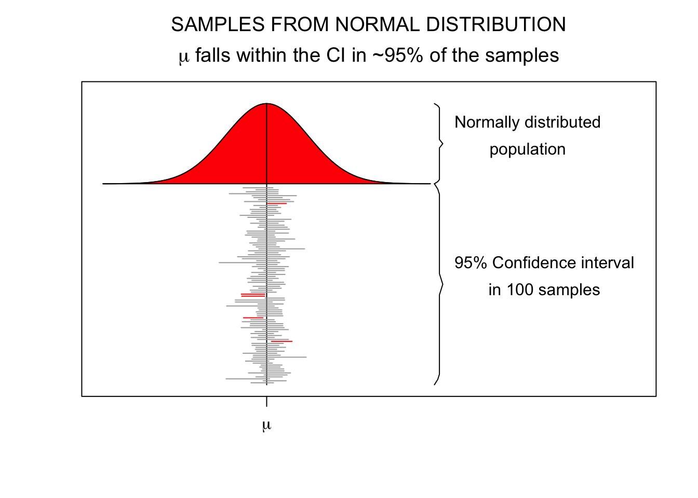
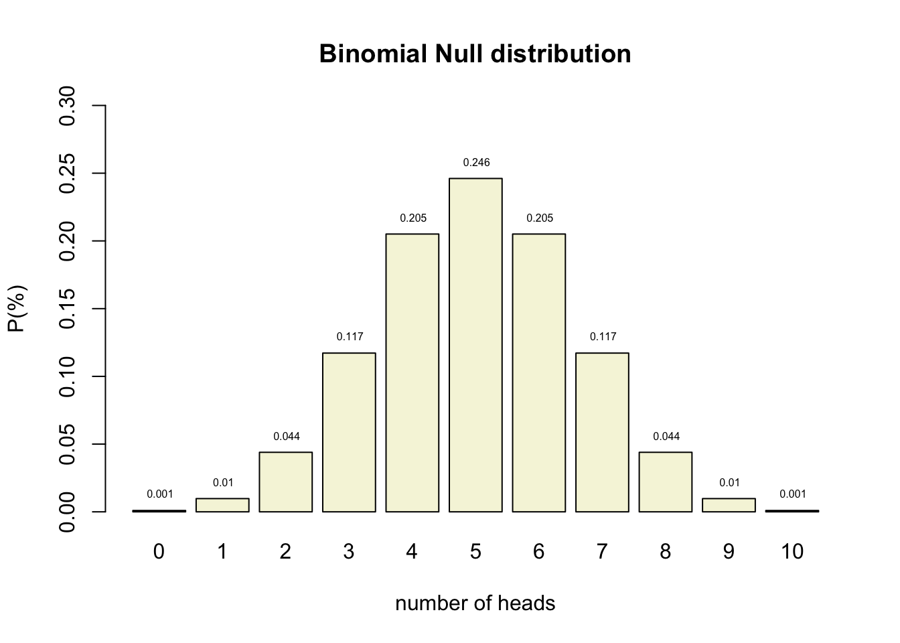
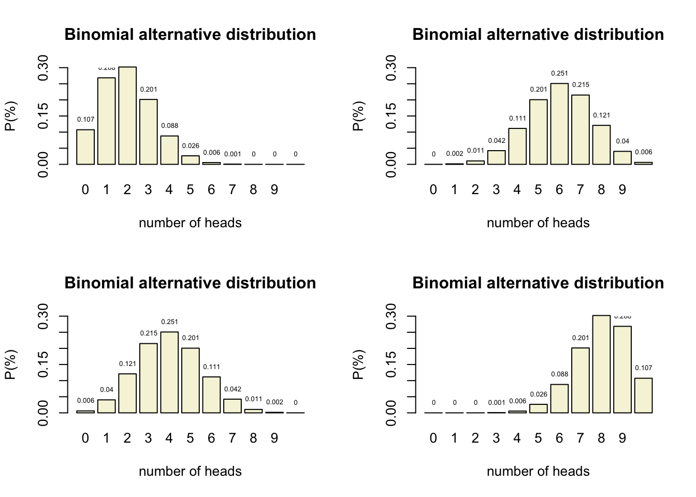
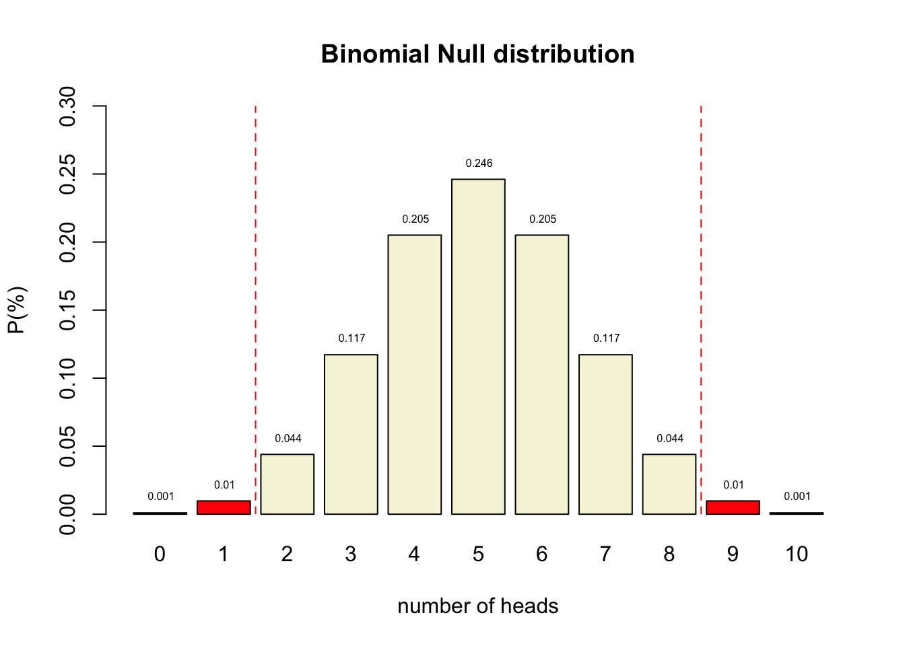
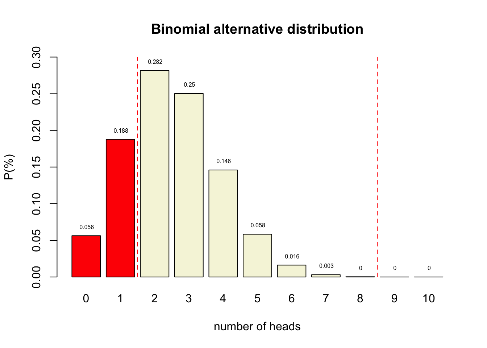
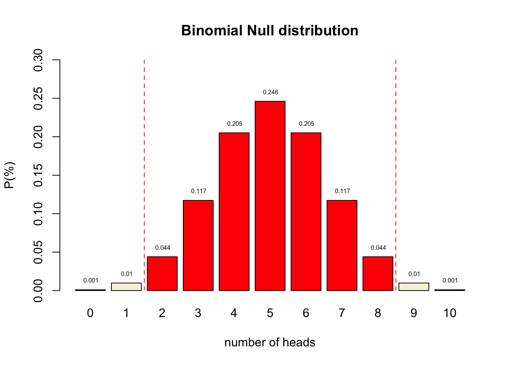
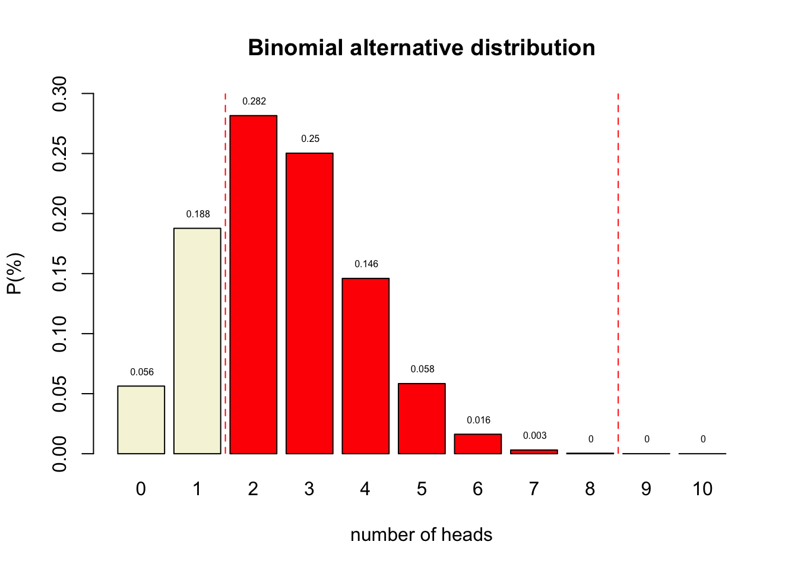
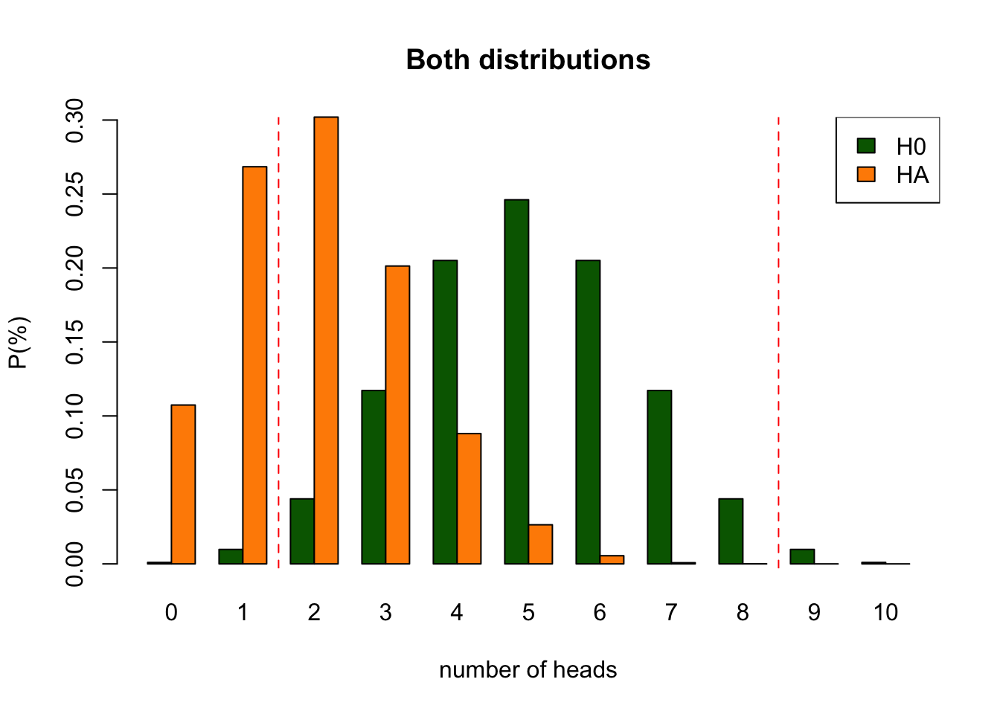
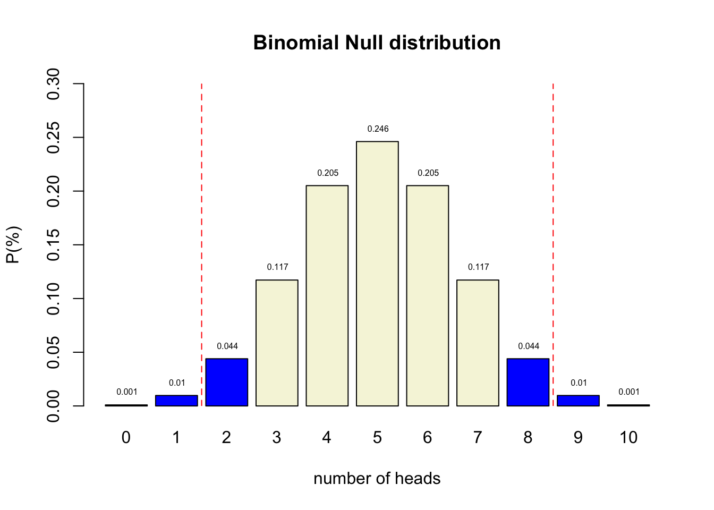

Null Hypothesis
Significance Testing
Neyman-Pearson Paradigm


Two hypotheses
\(H_0\)
- Skeptical point of view
- No effect
- No preference
- No Correlation
- No difference
\(H_A\)
- Refute Skepticism
- Effect
- Preference
- Correlation
- Difference
Frequentist probability
- Objective Probability
- Relative frequency in the long run
Standard Error
95% confidence interval
\[SE = \frac{\text{Standard deviation}}{\text{Square root of sample size}} = \frac{s}{\sqrt{n}}\]
- Lowerbound = \(\bar{x} - 1.96 \times SE\)
- Upperbound = \(\bar{x} + 1.96 \times SE\)
Standard Error
Binomial \(H_0\) distribution
n <- 10 # Sample size
k <- 0:n # Discrete probability space
p <- .5 # Probability of head
coin <- 0:1
permutations <- factorial(n) / ( factorial(k) * factorial(n-k) )
# permutations
p_k <- p^k * (1-p)^(n-k) # Probability of single event
p_kp <- p_k * permutations # Probability of event times
# the occurrence of that event
title <- "Binomial Null distribution"
# col=c(rep("red",2),rep("beige",7),rep("red",2))
barplot( p_kp,
main=title,
names.arg=0:n,
xlab="number of heads",
ylab="P(%)",
col='beige',
ylim=c(0,.3) )
# abline(v = c(2.5,10.9), lty=2, col='red')
text(.6:10.6*1.2,p_kp,round(p_kp,3),pos=3,cex=.5)
Binomial \(H_A\) distributions

Decision table
Alpha \(\alpha\)
- Incorrectly reject \(H_0\)
- Type I error
- False Positive
- Criteria often 5%
- Distribution depends on sample size

Power
- Correctly reject \(H_0\)
- True positive
- Power equal to: 1 - Beta
- Beta is Type II error
- Criteria often 80%
- Depends on sample size

Post-Hoc Power
- Also known as: observed, retrospective, achieved, prospective and a priori power
- Specificly meaning:
The power of a test assuming a population effect size equal to the observed effect size in the current sample.
Source: O’Keefe (2007)
Effect size
In statistics, an effect size is a quantitative measure of the strength of a phenomenon. Examples of effect sizes are the correlation between two variables, the regression coefficient in a regression, the mean difference and standardised differences.
For each type of effect size, a larger absolute value always indicates a stronger effect. Effect sizes complement statistical hypothesis testing, and play an important role in power analyses, sample size planning, and in meta-analyses.
Source: WIKIPEDIA
Effect size

Effect size

One minus alpha
- Correctly accept \(H_0\)
- True negative

Beta
- Incorrectly accept \(H_0\)
- Type II error
- False Negative
- Criteria often 20%
- Distribution depends on sample size


P-value
Conditional probability of the found test statistic or more extreme assuming the null hypothesis is true.
Reject \(H_0\) when:
- \(p\)-value \(\leq\) \(alpha\)
P-value in \(H_{0}\) distribution

Test statistics
Some common test statistics
- Number of heads
- Sum of dice
- Difference
- \(t\)-statistic
- \(F\)-statistic
- \(\chi^2\)-statistic
- etc…
Decision Table
Play around with this app to get an idea of the probabilities
Reasoning Scheme